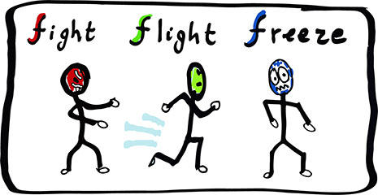
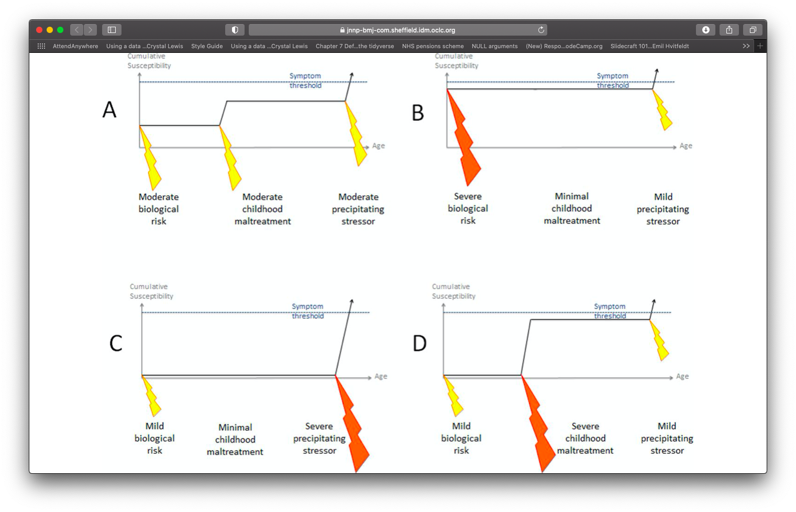
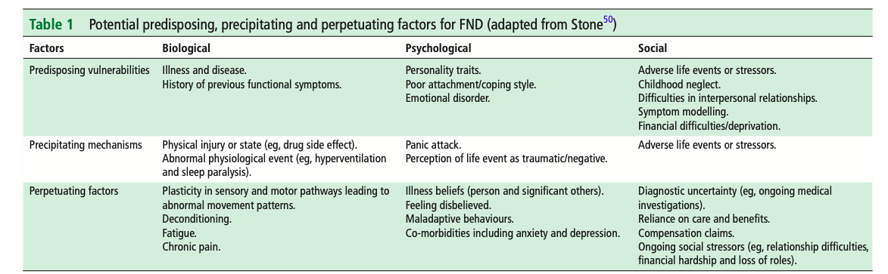

Functional Neurological
Disorders
Teaching for Combined NHS Foundation Trust
Dr. Abi Methley & Dr. Chris Gaskell
Neuropsychology
North Staffs Combined Healthcare
An Introduction to Working with Functional Neurological Disorders
North Staffordshire Combined Healthcare NHS Trust

Dr. Abi Methley
Senior Clinical Psychologist
Neuropsychology
North Staffordshire Combined Healthcare NHS Trust

Dr. Chris Gaskell
Senior Clinical Psychologist
Neuropsychology
North Staffordshire Combined Healthcare NHS Trust
Disclaimers
Emotionally pertinent areas üò¶
Potentially distressing videos üìπ
Not about emergency treatment response
We are learning too üßë‚Äçüéì
Terminology?
Sub-types include:
- FS= Functional Seizures (aka NEAD [Non Epileptic Attack Disorder] and others).
- FMD = Functional Movement Disorder.
- Functional Stroke.
- And many others.
Diagnoses:
Functional Neurological Symptoms Disorder (DSM-V)
Inclusion term to Conversion Disorder
Diagnosis requires motor and/or sensory findings.
Evidence of incompatibility between symptom and recognized neurological/medical conditions (APA, 2013, Stone et al., 2010b).
Symptoms must impair social/occupational functioning or lead individuals to seek a medical opinion.
No duration or severity criteria, or explicit rules for exclusion based on additional symptoms.
Dissociative Neurological Symptom Disorder (ICD-11)
- Much push back on terminology from FND charities and specialists around the world.
Functional Seizures
One manifestation/constellation of FND.
Within DSM-V classified (conversion disorder/functional neurological symptom disorder).
“Functional” referring to an impairment of normal functioning.
Disruption of usually integrated functions of consciousness, memory, identity, or perception (Goldstein et al., 2000).
Temporary loss of control and/or awareness.
Videos of FND
Symptom Heterogeneity
Classified by neurosymptoms.org, extracted 2021
Historical Perspectives
Taken from Raynor & Baslet (2021)
What Do We Mean By Functional?
Impairment of function.
Not suggesting a behavioural or intentional component.
Functional vs. Organic debates are outdated and inaccurate dualism.1
Can a person be non-organic?2
Software problem vs. hardware problem?
The Case For An Involuntary Condition
Neuroimaging in FND is an emerging area1.
Neurological differences shown in FND2.
FMRI studies show differences within people while experiencing vs volunteering tremor (Voon et al., 2010)
Now an international working group for neuroimaging.
- Multi-network disorder (Perez, 2021) likely influencing limbic/salience, self-agency, attentional, and sensorimotor circuits.
Diagnosis, Prevalence & Terminology
Who Is Involved in Diagnosis?
Usually by a Neurologist or Neuropsychiatrist.
Assessments can include:
Any professional who potentially comes into contact with patients has a potential role in identification and/or clarification.
This is everyone!
Important Notes around Diagnosis in FND
Based on positive clinical signs/symptoms1.
Internal inconsistency (reversibility) and/or to a lesser extent incongruency with known patterns of structural neurological disease.
Trauma is not required for diagnosis (more on this later).
Perceptions of ‘diagnosis of exclusion’ and hesitancy lead to damaging delays in diagnosis.
Following diagnosis, new symptoms are frequently (and wrongfully) dismissed.
Symptoms: Functional Movement
How Common Is FND?
FND Prevalence: 50/100000 in the population (Carson, 2016).
Functional Seizure Prevalence:
2-33/100000 (Carson, 2016).
Recent estimate = 24/100,000 (Norway) (Villagrán, 2021) .
Estimated 20,000 people in the UK.
8-12% of new presentations to seizure clinics (Angus-Leppan, 2008).
11% of seizures presenting to emergency services (Dickson et al., 2017).
What Are The Risk Factors For FND?
Age:
Gender:
Female preponderance = 60-80%.
Disparities less evident in older cohorts (e.g., Jungilligens, 2021)
Epilepsy: High rate of co-morbidity.
Learning Disabilities: High rate of co-morbidity (Rawlings et al., 2021).
Demographics:
What Are The Risk Factors For FND?
Misdiagnosis & Delayed diagnosis
Difficult at times to distinguish from other conditions.
Often leads to problems with:
Journey to diagnosis can be very long.
- Recent estimate of 3.2 years.
Response to functional seizures with seizure protocols (very common, see Jungilligens et al., 2021).
Prolonged use of anti-convulsants.
Lack of access to necessary support.
Time to receive treatment even longer.
Explaining the Diagnosis
Tips for Explaining the Diagnosis
Everyone has a role.
Need to be able to sensitively communicate, clarify and explain.
Don’t use pejorative terms.
Bio-psycho-social explanation (be careful with psychological trigger words).
Validate symptoms as genuine and common.
Name the condition.
Provide a brief mechanistic explanation (e.g., “brain becomes overloaded and shuts down”).
Foster a hopeful sentiment of improvement (eg, pointing out that treatments are available).
Terminology and Language
Many terms have been used:
Avoid Pejorative Terms
Much debate regarding preferred term1.
Communication has a significant impact on:
Patient satisfaction.
Acceptance of the diagnosis.
Frequency/severity of symptoms.
Future engagement with healthcare services (Hall-Patch et al., 2010; McKenzie, Russell).
What do Patients Prefer?
Taken from recent Loewenberger, 2021 (UK service evaluation)
Not to be Confused With
Malingering: Deliberately manufacturing symptoms for material gain e.g. Money.
Factitious Disorder: Deliberately manufacturing symptoms for emotional gain e.g. Attention.
Do not mistake symptoms symptoms for factitious/malingering just because it doesn’t fit with what your framework.
To Clarify
FND is a real condition.
Everyone has a role diagnosis.
Diagnosis based on positive symptoms.
Avoid pejorative language.
The Mind Body Link
Psychological experiences influence the body All The Time.
The cause is not medical but the impact on the body is real.
Sudden shock = heart beats faster.
Embarrassment = face goes red.
Upset = eyes produce tears.
It is normal for changes to happen in the body without a medical cause or disease.
FND also happens through this Mind-Body link.
Autonomic Reactions
Fight/flight/freeze response - evolutionary based fear response that is adaptive for survival.
Freezing is one of the main defensive threat reactions across species (Roelofs, 2017; Rockliffe-Fidler & Mark Willis, 2018).

Fight-flight theory. sympathetic nervous system.
Parasymathetic branch of the NS.
Sometimes it can be an adaptive response.
A means of responding to a threat or a trigger. mammals.
Explanatory Models
- Trauma & conversion.
- Bio-psycho-social models.
- Cognitive/neuropsychological models.
- Integrated cognitive model.
- Emotional processing.
Trauma
Traumatic event: incident causing physical, emotional or psychological harm.
Single event or repeated incidents (i.e., complex).
Recent or a long time ago.
Highly common in FND (compared to case controls, Ludwig et al., 2018).
Does not consistently explain aetiology or onset.
Not always helpful to ask.
Rates of Stressful Life Events
Taken from recent Ludwig et al 2018.
Although Rates are high, many people with FND do NOT report having experienced any trauma.
Trauma & FND Onset
Taken from Keynejad, 2021

Bio-psycho-social Model
Taken from Reuber 2009
Taken from Nicholson 2020

Integrated Cognitive model
Model proposed by Reuber & Brown (2017)
Single explanatory framework.
Symptoms = seizure scaffold + breakdown in inhibitory processes.
Brain response to sensory input = error (because of our expectations).
Seizure scaffold becomes activated (e.g., by arousal, emotions, thoughts).
Over time becomes a conditioned response (also learned helplessness + wilful submission).
Helps to account for variation in psychological history.
Predictive Processing Errors
Emotional Processing Model
Based on new insights (emotion processing and imaging).
Deficits can be some combination of difficulty for:
Emotion processing
Self-agency
Attention
Interoception
Inference.
Begins to explain the pathophysiology of FND.
Prediction error are central to maintenance.
Higher arousal states more akin to paroxysmal symptoms.
Difficulties with emotion processing (e.g., panic without panic).
Helps to explain patients who don’t identify as distressed (e.g., anx/dep).
Difficulties with interoception (e.g., seeming but not feeling anxious).
Treatments
Good news:
- Growing evidence that FND can be successfully treated ü•≥
Bad news:
- Provisions for treating are patchy and unclear üòï
What Treatment is Indicated?
It depends on the person.
Heterogeneity requires idiosyncratic approach.
For many patients, treatment will require MDT input.
Clinicians with familiarity in FND.
Health Provision
Need to move away from services only being able to provide single/multi disciplinary approaches.
Take from https://www.totalcommunication.com
Role of Psychology
Potentially suited to help all FND variants (won’t be necessary for all).
Co-morbidities needs to be accounted for.
Treating underlying and potentially long-standing distress (e.g., anxiety, depression, trauma).
The Evidence Base?
Psychology
Neuro-Stimulation
Physiotherapy
Problems with Measuring Seizures
Not always amenable to change (CODES, 2020).
Hard to synthesize results due to heterogeneity of frequency.
Hard to accurately measure.
Hard to attribute importance of weighting.
Seizures may not be the primary problem.
Patient may have other things they want to change.
What to Measure?
Not just about the core FND symptoms.
7+ outcome measures used per study (unpublished study).1
Core outcome battery and specific tools still lacking (for now).
Taken from Nicholson (2020)
Change Across Other Measures
In all conditions treatment remains effective (approx d = .5)
Acceptability
Some patients ambivalent to treatment.
Doesn’t always fit with patient view of difficulties.
Comes following a long journey.
High expectations.
How do Treatments Work?
Multi-faceted.
Relevant mechanisms of change across all therapeutic approaches.
Psycho-education likely to be important.
Ample evidence that CBT helps in the short term.
Trauma focused work important (if needed).
Approach should be tailored (see Myers et al., 2021 for a guide).
Ways to Intervene

What can cause a person to go into/ stay in the amber zone?
Physical stress in the body (e.g., injury, illness, pain).
Difficult past experiences (e.g., situations that have felt threatening, loss of a loved one).
Current stressful situations (e.g., relating to finances, relationships, difficulty meeting responsibilities, loss of independence).
Emotional stress (e.g., worries about the future, difficult memories).
For many people, it is not one big thing that has caused them to go into and stay in the amber zone. It is often a combination of factors.
What else can help
Tips for Acute Management
Maintain a calm, quiet environment
Give me space, speak to me calmly
Tell other people it is NOT a medical emergency
Help to re-orientate (e.g. tell the person where and who they are, what is happening).
Offer water.
Encourage noticing what they can see/hear (e.g. count the number of circles/ red things).
Maintain a calm environment.
Encourage focus on slow, deep breaths.
Find out if there is someone who can help them to get home/ to a safe place?
Provide support to friends/ family.
- Do not attempt to make a differential diagnosis. If information about the diagnosis is not available, follow epilepsy guidelines.
- Give me medication.
- Touch me (unless to protect my head).
- Crowd or stand over me.
- let there be more then one person nearby.
- Try to bring me “out of it”.
- Restrain me.
- Time the episode.
- Take me to hospital, unless I have a significant injurt that needs immediate medical att.
- try to lift the person up or try to get them moving before they are ready.
- Ask lots of questions.
- Say things such as:
“You are (just) stressed”
“You do not have…”
“It’s nothing to worry about”
“You can control this”
“Stop doing this”
People with NEAD may still be able to hear (unlike NEAD
idea is that the person gets to the place where they can manage it themselves (not have to go to hospital).
No need to have to get people to end it quickly.
May be tired and stressed and therefore at higher risk of further episodes.
not about differential dx but rather bearing this information in mind.
If you have suspicions or evidence of NEAD then pass it on during your handover to make sure they get the appropriate care.
gently re-orienting and offering as they may be confused or be finding it difficult to communicate.
Websites
FND Hope
FND Society
Manchester Neurosciences (Salford NEAD service)
Neurosymptoms.org
Books
Patient Experiences Book
Clinician Experiences Book
Handbook of Clinical Neurology
Functional Movement Disorders Textbook